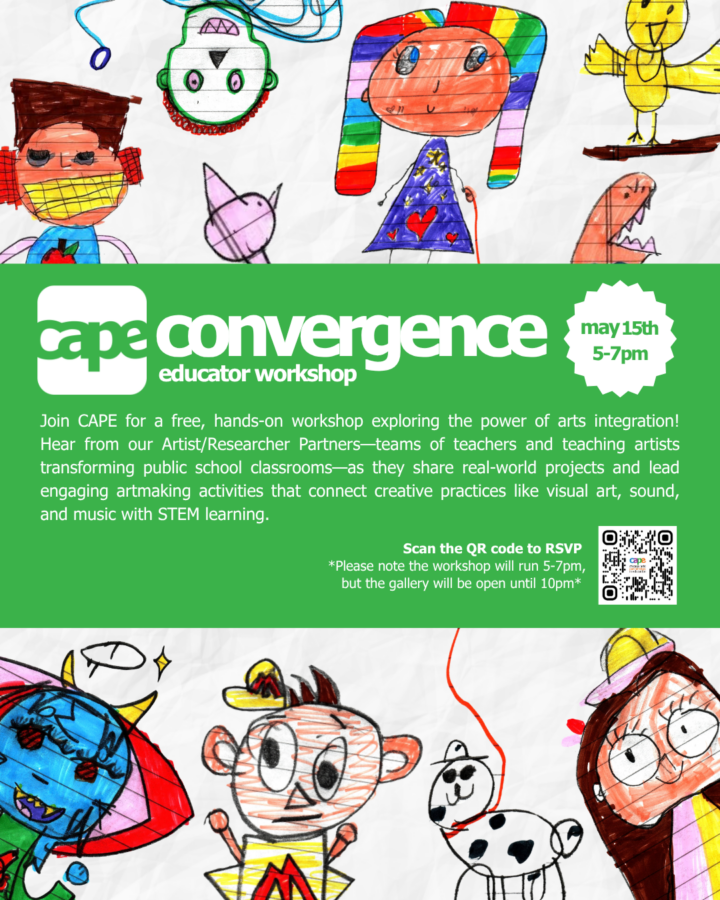

CAPE Educator Workshop/Third Friday
Join CAPE for a free, hands-on workshop exploring the power of arts integration!
Hear from our Artist/Researcher Partners-teams of teachers and teaching artists transforming public school classrooms-as they share real-world projects and lead engaging artmaking activities that connect creative practices like visual art, sound, and music with STEM learning.
RSVP here: https://secure.qgiv.com/for/dtxtsa/